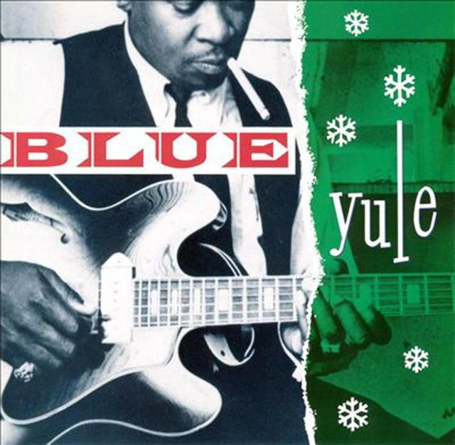

Please Come Home for Christmas
topics: Christmasconnectionlove
3 min read

If Christmas is supposed to return us to home and family, then of course songs will be written about those who are still left yearning for a reunion with loved ones during the holiday season.
Charles Brown helped to give us the joyful “Merry Christmas Baby,” but he also first delivered, and co-wrote, the plaintive appeal found in “Please Come Home for Christmas.”
Brown's recording found an appreciative audience upon its first release in 1960, and continued to be popular during the holidays for the next decade. The song has been covered extensively since then, sometimes changing the “glad, glad news” of the first line to the “sad, sad news,” anticipating the singer's predicament rather than offering a contrast to it.
Bells will be ringing the glad, glad news.
Oh what a Christmas to have the blues.
My baby's gone, I have no friends
To wish me greetings once again.Choirs will be singing “Silent Night.”
Christmas carols by candlelight.
Please come home for Christmas,
Please come home for Christmas,
If not for Christmas, by New Year's night.Friends and relations send salutations
Sure as the stars shine above.
This is Christmas, yes Christmas my dear,
The time of year to be with the one you love.So won't you tell me you'll never more roam,
Christmas and new Year's will find you home.
There'll be no more sorrow, no grief and pain,
Cause I'll be happy, happy once again.
This is a fairly straightforward little number. As usual, it includes descriptions of some of the traditional elements of the holiday season, making the singer's separation from his loved one all the more poignant. (The line “Friends and relations send salutations” is probably the most unusual of these, and my favorite.)
It's hard to mess this one up, and you can find any number of creditable versions on your streaming service of choice, but I'd like to call your attention to my favorite rendition of this gem, even though it might be a bit more difficult to track down.
This recording was originally released as a single in the early sixties on the Cascade label. It was performed by a group called The Insight. I first heard it on a compilation album titled Blue Yule, released on CD in 1991. The group featured a very young Johnny and Edgar Winter. And although both of these brothers from Texas later became known for their instrumental prowess – especially Johnny on guitar – here it is their singing that takes center stage. They take turns on lead vocals – with the alternate brother improvising complementary vocals in the background – but then come together perfectly in close harmony on key lines. They shout, lament, wail, croon, moan, scat, sing falsetto and in general engage in more vocal hijinks than any two white boys have any right to in a little under three minutes. I'm tempted to call this a great example of blue-eyed soul except that both brothers, like other albinos, appeared to have eyes more red in color.
Unfortunately this version does not seem to be available within Apple Music. You can listen to it on YouTube however. There are several other versions of this song by Johnny Winter available on YouTube as well, but make sure you listen to this one, which is the original recording with brother Edgar. If you'd like to have it on CD, then I can highly recommend the Blue Yule CD, which is available on Amazon.
Next: “Christmas (Baby Please Come Home)” by Darlene Love and Phil Spector
Or see the complete list of "Christmas Favorites from The Practical Utopian.